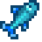

Parabéns! Você completou a Pesca!
Peixes
Peixes
| Imagem | Peixe | Local | Hora | Estação | Clima | |
|---|---|---|---|---|---|---|
 |
Baiacu | Oceano | 12:00 - 16:00 | Verão | Ensolarado | |
 |
Anchova | Oceano | Qualquer | Primavera e Outono | Qualquer | |
 |
Atum | Oceano | 06:00 - 19:00 | Verão e Inverno | Qualquer | |
 |
Sardinha | Oceano | 06:00 - 19:00 | Primavera, Outono e Inverno | Qualquer | |
 |
Brema | Rio (Cidade+Floresta) | 18:00 - 02:00 | Todas as Estações | Qualquer | |
 |
Achigã | Lago da Montanha | 06:00 - 19:00 | Todas as Estações | Qualquer | |
 |
Achigã-pequeno | Rio (Cidade) Lago da Floresta |
Qualquer | Primavera e Outono | Qualquer | |
 |
Truta Arco-Íris | Rio (Cidade+Floresta) Lago da Montanha |
06:00 - 19:00 | Verão | Ensolarado | |
 |
Salmão | Rio (Cidade+Floresta) | 06:00 - 19:00 | Outono | Qualquer | |
 |
Picão-verde | Rio (Cidade+Floresta) Lago da Floresta |
12:00 - 02:00 | Outono Inverno *com Totem de Chuva* |
Chuvoso | |
 |
Perca | Rio (Cidade+Floresta) Lago da Floresta Lago da Montanha |
Qualquer | Inverno | Qualquer | |
 |
Carpa | Lago da Montanha Lagoa do Bosque Secreto Os Esgotos |
Qualquer | Todas Estações | Qualquer | |
 |
Bagre | Rio (Cidade+Floresta) Lagoa do Bosque Secreto Pântano da Bruxa |
06:00 - 00:00 | Primavera Verão *Lago do Bosque Secreto* Outono |
Chuvoso | |
 |
Lúcio | Rio (Cidade+Floresta) Lago da Floresta |
Qualquer | Verão e Inverno | Qualquer | |
 |
Peixe-sol | Rio (Cidade+Floresta) | 06:00 - 19:00 | Primavera e Verão | Ensolarado ou Ventando | |
 |
Salmonete | Oceano | 06:00 - 19:00 | Verão e Inverno | Qualquer | |
 |
Arenque | Oceano | Qualquer | Primavera e Inverno | Qualquer | |
 |
Enguia | Oceano | 16:00 - 02:00 | Primavera e Outono | Chuvoso | |
 |
Polvo | Oceano | 06:00 - 13:00 | Verão | Qualquer | |
 |
Cioba | Oceano | 06:00 - 19:00 | Verão, Outono e Inverno | Chuvoso | |
 |
Lula | Oceano | 18:00 - 08:00 | Inverno | Qualquer | |
 |
Pepino-do-mar | Oceano | 06:00 - 19:00 | Outono e Inverno | Qualquer | |
 |
Superpepino | Oceano Oceano da Ilha Gengibre |
18:00 - 02:00 | Verão e Outono | Qualquer | |
 |
Peixe-fantasma | Mina (20º, 60º andar) Expólio de Fantasmas |
Qualquer | Todas as Estações | Qualquer | |
 |
Peixe-pedra | Mina (20º andar) | Qualquer | Todas as Estações | Qualquer | |
|  | Chione | Mina (60º andar) | Qualquer | Todas as Estações | Qualquer | |
 |
Enguia de Lava | Mina (100º andar) | Qualquer | Todas as Estações | Qualquer | |
 |
Areinha | O Deserto | 06:00 - 20:00 | Todas as Estações | Qualquer | |
 |
Carpa Escorpiônica | O Deserto *requer pesca nível 4* | 06:00 - 20:00 | Todas as Estações | Qualquer | |
 |
Linguado | Oceano Oceano da Ilha Gengibre |
06:00 - 20:00 | Primavera e Verão | Qualquer | |
 |
Carpa da Meia-noite | Lago da Montanha Lago da Floresta Lago e Rio da Ilha Gengibre |
22:00 - 02:00 | Outono e Inverno | Qualquer | |
 |
Esturjão | Lago da Montanha | 06:00 - 19:00 | Verão e Inverno | Qualquer | |
 |
Salmão Híbrido | Rio (Cidade+Floresta) | 06:00 - 19:00 | Outono e Inverno | Qualquer | |
 |
Peixe-gato-cabeçudo | Lago da Montanha | Qualquer | Todas Estações | Qualquer | |
 |
Tilápia | Oceano Rios da Ilha Gengibre |
06:00 - 14:00 | Verão e Outono | Qualquer | |
 |
Esquálio | Rio (Floresta) Lago da Montanha |
Qualquer | Todas as Estações | Qualquer | |
 |
Dourado | Rio (Floresta) | 06:00 - 19:00 | Verão | Qualquer | |
 |
Albacora | Oceano | 06:00 - 11:00 18:00 - 02:00 |
Outono e Inverno | Qualquer | |
 |
Alocine | Rio (Cidade+Floresta) | 09:00 - 02:00 | Primavera, Verão e Outono | Chuvoso | |
 |
Ófis | Rio (Cidade+Floresta) Lago da Montanha |
Qualquer | Inverno | Qualquer | |
 |
Halibute | Oceano Lago da Montanha |
06:00 - 11:00 19:00 - 02:00 |
Primavera, Verão e Inverno | Qualquer | |
 |
Madeirão | Lago do Bosque Secreto Fazenda na Floresta |
Qualquer | Todas as Estações | Qualquer | |
 |
Salmão Nulo | Pântano da Bruxa | Qualquer | Todas as Estações | Qualquer | |
 |
Salmão Mutante | Covil dos Insetos Mutantes | Qualquer | Todas as Estações | Qualquer | |
 |
Peixe-Leão | Oceano Ilha Gengibre | Qualquer | Todas as Estações | Qualquer | |
 |
Acará-disco Azul | Lagos e Rios da Ilha Gengibre | Qualquer | Todas as Estações | Qualquer | |
 |
Gobi | Cachoeira da Floresta Cinzenta | Qualquer | Todas as Estações | Qualquer | |
 |
Arraia | Caverna do Pirata (Ilha Gengibre) | Qualquer | Todas as Estações | Qualquer | |
 |
Lula da Meia-Noite | Submarino de Pesca (Mercado Noturno) | 17:00 - 02:00 | Inverno | Qualquer | |
 |
Peixe Assustador | Submarino de Pesca (Mercado Noturno) | 17:00 - 02:00 | Inverno | Qualquer | |
 |
Peixe-bolha | Submarino de Pesca (Mercado Noturno) | 17:00 - 02:00 | Inverno | Qualquer | |
 |
Peixe-carmim | Encontrado no pier leste na Praia *requer pesca nível 5* | Qualquer | Verão | Qualquer | |
 |
Tamboril | Ao norte do Mercado Joja na ponte de madeira*requer pesca nível 3* | Qualquer | Outono | Qualquer | |
 |
Lenda | Encontrado no lago da montanha. Maiores chance de morder perto do tronco no fundo*requer pesca nível 10* | Qualquer | Primavera | Chuvoso | |
 |
Peixe-gelo | Ao sul da Ilha Cabeça de Flecha na Floresta Cinzaseiva.*requer pesca nível 6* | Qualquer | Inverno | Qualquer | |
 |
Carpa Mutante | Os Esgotos | Qualquer | Todas as Estações | Qualquer | |
 |
Algas Marinhas | Oceano | Qualquer | Todas as Estações | Qualquer | |
 |
Algas Verdes | Rios e Lagos | Qualquer | Todas as Estações | Qualquer | |
 |
Algas Brancas | Minas, Esgoto, Covil dos Insetos Mutantes e Cabana da Bruxa | Qualquer | Todas as Estações | Qualquer | |
 |
Geléia do Mar | Oecano | Qualquer | Todas as Estações | Qualquer | |
 |
Geléia do Rio | Rios e Lagoas | Qualquer | Todas as Estações | Qualquer | |
 |
Geléia da Caverna | Mina (20º, 60º e 100º) | Qualquer | Todas as Estações | Qualquer |
 Covo
Covo
| Imagem | Nome | Local | Clima | |
|---|---|---|---|---|
 |
Lagosta | Oceano | Todas as Estações | |
 |
Concha | Oceano | Todas as Estações | |
 |
Caranguejo | Oceano | Todas as Estações | |
 |
Berbigão | Oceano | Todas as Estações | |
 |
Mexilhão | Oceano | Todas as Estações | |
 |
Camarão | Oceano | Todas as Estações | |
 |
Ostra | Oceano | Todas as Estações | |
 |
Lagostim | Rios e Lagos da Fazenda Rio da Montanha, Cidade e Floresta Cinzenta |
Todas as Estações | |
 |
Lesma | Rios e Lagos da Fazenda Rio da Montanha, Cidade e Floresta Cinzenta |
Todas as Estações | |
 |
Caramujo | Rios e Lagos da Fazenda Rio da Montanha, Cidade e Floresta Cinzenta |
Todas as Estações |